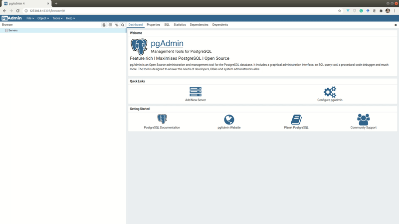

Quickstart tutorial
Note
You should complete the installation of pushkin-cli and its dependencies before beginning this tutorial.
Starting Docker
First, open Docker Desktop and make sure Docker Engine is running. You can check by running docker ps in the terminal, which will show a list of your running containers, which should be empty at this point:
If Docker isn't running, you'll see a message that you "cannot connect to the Docker daemon".
Creating a basic Pushkin site
Create a new directory (e.g., pushkin_quickstart) in a location of your choosing (we'll use the Desktop here) and enter this directory using the following commands:
(For more on basic terminal commands, you can check out this blog post.)
Install your pushkin site in the directory you just created:
You will be asked where you want to look for a site template. Choose Official Pushkin distribution. You will then be asked to select a site template to use. Choose site-basic; then choose the recommended version.This sets up a skeleton website in the current folder and a development database. Once the command finishes, your site folder should contain the following directories and files:
├── __mocks__
├── babel.config.js
├── coreMigrations
├── e2e
├── experiments
├── jest.config.js
├── node_modules
├── package.json
├── playwright.config.js
├── pushkin
├── pushkin.yaml
└── users
Updating site config options
Open pushkin.yaml in your project root directory. It should look something like:
experimentsDir: experiments
coreDir: pushkin
DockerHubID: ''
databases:
localtestdb:
user: postgres
pass: example
url: localhost
port: '5432'
name: test_db
host: test_db
localtransactiondb:
user: postgres
pass: example
host: test_transaction_db
port: '5433'
url: localhost
name: test_transaction_db
info:
rootDomain: localhost
whoAmI: Citizen Science Website
hashtags: 'science, learn'
email: me@mydomain.com
shortName: CSW
addons:
useForum: false
useAuth: false
salt: abc123
fc:
popup: false
You can ignore most of these settings for now, but you should probably change:
- whoAmI: This is the name of your website that will be displayed to users
- hashtags: These are hashtags used for social media
- email: An email where notifications, etc., will be sent to.
- shortName: An abbreviated name of your website
The one you should definitely change is salt. This is used to encrypt private information. Type in any alphanumeric text here, for instance:
Adding experiments
To add experiments to your Pushkin site, run:
You'll first be asked what you want to name your experiment. Call it hello, since we're going to make this experiment a simple "hello, world" example.
You'll then be asked where you want to look for experiment templates; choose Official Pushkin distribution.
Then you'll be asked which experiment template you want to use. The exp-basic template is a bare-bones "hello, world" experiment. Choose exp-basic and then select the recommended version of the template. Choose 'no' when asked if you want to import a jsPsych experiment (this option only applies to the basic template).
Repeat the process above but this time select the lexical-decision template. You can call this one lexdec. Now do the same thing for the grammaticality-judgment and self-paced-reading templates, naming them gram and spr.
The experiments directory of your site should now look like this:
└── gram
├── api controllers
├── config.yaml
├── migrations
├── web page
└── worker
└── hello
├── api controllers
├── config.yaml
├── migrations
├── web page
└── worker
└── lexdec
├── api controllers
├── config.yaml
├── migrations
├── web page
└── worker
└── spr
├── api controllers
├── config.yaml
├── migrations
├── web page
└── worker
Each experiment has its own configuration file (config.yaml), which allows you to make a number of customizations, e.g. defining a longer human-readable name for the experiment:
Reorganizing your site for testing/deployment
Keeping all the files for an experiment within the same root folder is convenient for development, but not for actually deploying the website. To reorganize your site for deployment (and local testing), run:
Note
Don't worry: pushkin prep won't jumble up the files in the pushkin_quickstart directory you created; rather it reorganizes the files into Docker containers. There's never any need to "unprep" your site. You can run pushkin prep, make changes in your local site directory, re-run pushkin prep, and the changes you made will be reflected in Docker.
Testing your site locally
Now let’s look at your website! Start your local deploy by running:
In a web browser, open localhost and you should see your site with the experiments you made. Click on the one you called hello. It should display "Hello world!". Complete the experiment by pressing any key. If you want to take a look at the other experiments you made, feel free to look over those now too.
When you are done looking at your website, stop the local deploy by running:
If you don’t do that, the web server will keep running in Docker until you quit Docker or restart. When the command has finished running, it should output done.
Site testing with GitHub Codespaces
If you are developing your Pushkin site in a codespace, you'll run pushkin start just like for local testing; however, to view your site, click on the "PORTS" tab and click the globe icon for port 80 to open your site in the browser:
If you notice CORS errors in the console while testing your site in a codespace, a potential fix can be to make port 80 public:
After you're done looking at your site, run pushkin stop just as you would for local testing.
Updating your site
Imagine now you want to add another experiment or edit an existing one. Every time you update your site, you’ll need to run pushkin prep (and pushkin start if you want to look at your updates) again:
Removing experiments
If you'd like to get rid of one or more of your site's experiments, you can remove them with this command:
There are two options when removing an experiment, archive and delete. Archiving an experiment simply removes it from your site's front end. This means that the experiment will no longer be accessible to participants. Archiving an experiment can be undone by calling pushkin remove experiment again and specifying the unarchive mode. Deleting an experiment removes all of its files, data, and Docker components. Deleting an experiment is irreversible, so be sure you want the experiment gone before using this mode.
Warning
For technical reasons, the current implementation of the delete mode deletes all experiments' data from your local database, not just the experiment(s) you deleted. Future development may address this limitation.
Since the remove experiment command updates your site, you will need to run pushkin prep afterwards just like if you added an experiment or edited other parts of your site.
Viewing your data
At this point, you should have generated some data by testing at least one of your experiments. In order to view it, you can use whatever Postgres manager you installed based on the Pushkin installation instructions. Here, we'll go over how to view the data using either pgAdmin or SQLTools. Make sure your database is running first by using the command pushkin start.
When you start pgAdmin, it will take a moment to load and then will appear as a new tab in your web browser. When you install it the first time, it will ask you to set a master password. This can be whatever you'd like, but make sure you keep it in a secure place.
Under Quick Links, click Add New Server. Make sure you have run pushkin start and that your site is running in localhost. Then follow these steps:
- You can set the name of the server to anything, e.g.
Pushkin Testing. - Then move to the Connection tab and set Host name/address to
localhost. - Set the password to the default password,
example, which you can find inpushkin.yaml. - Click Save and your Pushkin Testing server should appear in the left sidebar.

To view your data tables, navigate to the left sidebar:
- Click to expand your Pushkin Testing server.
- Select test_db under Databases.
- Select Schemas, which will also open its subitem public.
- Under public, choose Tables.
You should see a list of tables including some that end in _stimulusResponses corresponding to each of your experiments. Right click any one of those, hover over View/Edit Data, and click on All Rows, which will open a new pgAdmin tab displaying the records in that table.
For more information on how to use pgAdmin, you can read their documentation here.
The following instructions should work whether you're using the desktop VS Code application or browser-based VS Code via GitHub Codespaces. Assuming you have installed SQLTools and the necessary Postgres driver, click on the SQLTools tab on the left side of the window. Click Add New Connection and you'll see some fields you need to fill out:

Name the connection whatever you want. We'll call it Pushkin Test here. For the database and username, fill in test_db and postgres respectively. These are Pushkin's default database configurations. For the Use password field, select Ask on connect. Click SAVE CONNECTION at the bottom of that screen. You should now be prompted to fill in the password (example, unless you changed it earlier in you site's config file).
You should see your connection in the left-hand window of the screen. Now select Pushkin Test > test_db > Schemas > public > Tables.

You should see a list of tables including some that end in _stimulusResponses corresponding to each of your experiments. Right click any of those and select Show Table Records. You should now see any data you created for that experiment.
Starting over
In some cases, you may find that editing your local code does not change what Docker thinks the code is. If you are updating something, but it’s not showing up in localhost, the issue may be related to Docker. You may also see Docker-related error messages. Ideally, in these cases, you should read up on Docker. However, as a fail-safe, you can run pushkin kill to delete all your Pushkin-specific code in Docker. Then just run pushkin prep again. This will take a while but should address any Docker-specific problems. If you really need a fresh Docker install, run pushkin armageddon, which will completely clean Docker.